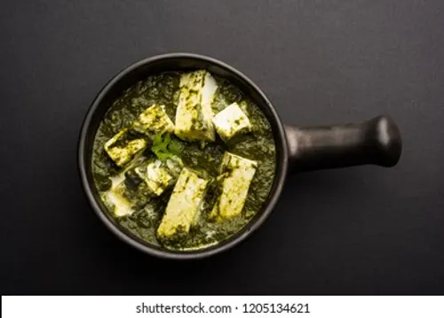

Palak Paneer
⏱ Prep: 10 mins
🔥 Cook: 15 mins
🍽 Serves: 4
Ingredients
- 250g paneer cubes
- 2 cups blanched spinach puree
- 1 onion & 1 tomato
- 1 tsp ginger-garlic paste
- 1 tsp garam masala
- Salt & butter
Steps
- Sauté onions and ginger-garlic paste.
- Add tomato, cook until soft.
- Add spinach puree and spices.
- Add paneer and simmer 3 minutes.